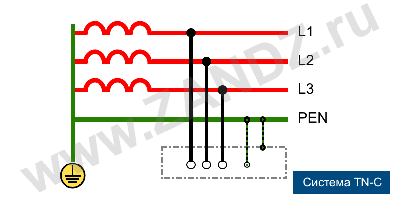
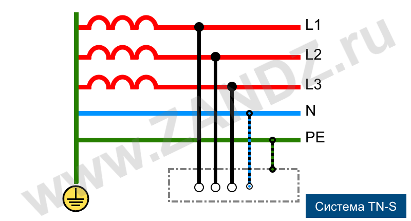
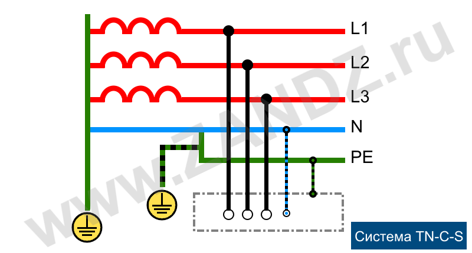
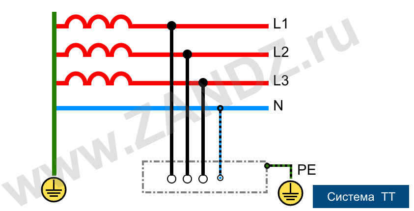
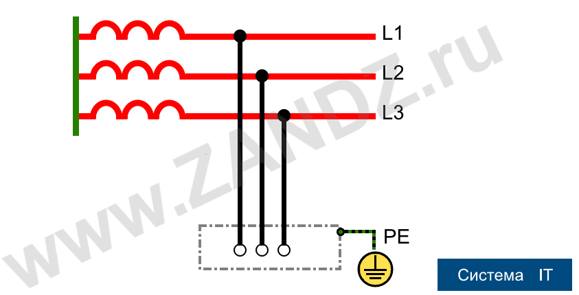

Системы заземления TN-S, TN-C, TNC-S, TT, IT
При проектировании, монтаже и эксплуатации электроустановок, промышленного и бытового электрооборудования, а также электрических сетей освещения, одним из основополагающих факторов обеспечения их функциональности и электробезопасности является точно спроектированное и правильно выполненное заземление. Основные требования к системам заземления содержатся в пункте 1.7 Правил устройства электроустановок (ПУЭ). В зависимости от того, каким образом, и с каким заземляющими конструкциями, устройствами или предметами соединены соответствующие провода, приборы, корпуса устройств, оборудование или определенные точки сети, различают естественное и искусственное заземление.
Естественными заземлителями являются любые металлические предметы, постоянно находящиеся в земле: сваи, трубы, арматура и другие токопроводящие изделия. Однако, ввиду того, что электрическое сопротивление растеканию в земле электротока и электрических зарядов от таких предметов плохо поддается контролю и прогнозированию, использовать естественное заземление при эксплуатации электрооборудования запрещается. В нормативной документации предусмотрено использование только искусственного заземления, при котором все подключения производятся к специально созданным для этого заземляющим устройствам.
Основным нормируемым показателем, характеризующим, насколько качественно выполнено заземление, является его сопротивление. Здесь контролируется противодействие растеканию тока, поступающего в землю через данное устройство — заземлитель. Величина сопротивления заземления зависит от типа и состояния грунта, а также особенностей конструкции и материалов, из которых изготовлено заземляющее устройство. Определяющим фактором, влияющих на величину сопротивления заземлителя, является площадь непосредственного контакта с землей составляющих его пластин, штырей, труб и других электродов.
Виды систем искусственного заземления
Основным документом, регламентирующим использование различных систем заземления в России, является ПУЭ (пункт 1.7), разработанный в соответствии с принципами, классификацией и способами устройства заземляющих систем, утвержденных специальным протоколом Международной электротехнической комиссии (МЭК). Сокращенные названия систем заземления принято обозначать сочетанием первых букв французских слов: «Terre» — земля, «Neuter» — нейтраль, «Isole» — изолировать, а также английских: «combined» и «separated» - комбинированный и раздельный.
В приведенных ниже названиях систем искусственного заземления по первой букве можно судить о способе заземления источника электрической энергии (генератора или трансформатора), по второй – потребителя. Принято различать TN, TT и IT системы заземления. Первая из которых, в свою очередь, используется в трех различных вариантах: TN-C, TN-S, TN-C-S. Для понимания различий и способов устройства перечисленных систем заземления следует рассмотреть каждую из них более детально.
1. Системы с глухозаземлённой нейтралью (системы заземления TN)
Это обозначение систем, в которых для подключения нулевых функциональных и защитных проводников используется общая глухозаземленная нейтраль генератора или понижающего трансформатора. При этом все корпусные электропроводящие детали и экраны потребителей следует подключить к общему нулевому проводнику, соединенному с данной нейтралью. В соответствии с ГОСТ Р50571.2-94 нулевые проводники различного типа также обозначают латинскими буквами:
Построенная с использованием глухозаземленной нейтрали, система заземления TN характеризуется подключением функционального «ноля» — проводника N (нейтрали) к контуру заземления, оборудованному рядом с трансформаторной подстанцией. Очевидно, что в данной системе заземление нейтрали посредством специального компенсаторного устройства — дугогасящего реактора не используется. На практике применяются три подвида системы TN: TN-C, TN-S, TN-C-S, которые отличаются друг от друга различными способами подключения нулевых проводников «N» и «PE».
Система заземления TN-C

Система заземления TN-C
Как следует из буквенного обозначения, для системы TN-C характерно объединение функционального и защитного нулевых проводников. Классической TN-C системой является традиционная четырехпроводная схема электроснабжения с тремя фазными и одним нулевым проводом. Основная шина заземления в данном случае – глухозаземленная нейтраль, с которой дополнительными нулевыми проводами необходимо соединить все открытые детали, корпуса и металлические части приборов, способные проводить электрический ток..
Данная система имеет несколько существенных недостатков, главный из которых – утеря защитных функций в случае обрыва или отгорания нулевого провода. При этом на неизолированных поверхностях корпусов приборов и оборудования появится опасное для жизни напряжение. Так как отдельный защитный заземляющий проводник PE в данной системе не используется, все подключенные розетки земли не имеют. Поэтому используемое электрооборудование приходится занулять – соединять корпусные детали с нулевым проводом. .
Если при таком подключении фазный провод коснется корпуса, из-за короткого замыкания сработает автоматический предохранитель, и опасность поражения электрическим током людей или возгорания искрящего оборудования будет устранена быстрым аварийным отключением. Важным ограничением при вынужденном занулении бытовых приборов, о чем следует знать всем проживающим в помещениях, запитанных по системе TN-C, является запрет использования дополнительных контуров уравнивания потенциалов в ванных комнатах.
В настоящее время данная система заземления сохранилась в домах, относящихся к старому жилому фонду, а также применяется в сетях уличного освещения, где степень риска минимальна.
Система TN-S

Система заземления TN-S
Более прогрессивная и безопасная по сравнению с TN-C система с разделенными рабочим и защитным нолями TN-S была разработана и внедрена в 30-е годы прошлого века. При высоком уровне электробезопасности людей и оборудования это решение имеет один, но достаточно очень существенный недостаток — высокую стоимость. Так как разделение рабочего (N) и защитного (PE) ноля реализовано сразу на подстанции, подача трехфазного напряжения производится по пяти проводам, однофазного — по трем. Для подключения обоих нулевых проводников на стороне источника используется глухозаземленная нейтраль генератора или трансформатора.
В ГОСТ Р50571 и обновленной редакции ПУЭ содержится предписание об устройстве на всем ответственных объектах, а также строящихся и капитально ремонтируемых зданиях энергоснабжения на основе системы TN-S, обеспечивающей высокий уровень электробезопасности. К сожалению, широкому распространению и внедрению системы TN-S препятствует высокий уровень затрат и ориентированность российской энергетики на четырехпроводные схемы трехфазного электроснабжения.
Система TN-C-S

Система заземления TN-C-S
С целью удешевления оптимальной по безопасности, но финансово емкой системы TN-S с разделенными нулевыми проводниками N и PE, было создано решение, позволяющее использовать ее преимущества с меньшим бюджетом, незначительно превышающим расходы на энергоснабжение по системе TN-C. Суть данного способа подключения состоит в том, что с подстанции осуществляется подача электричества с использованием комбинированного нуля «PEN», подключенного к глухозаземленной нейтрали. Который при входе в здание разветвляется на «PE» - ноль защитный, и еще один проводник, исполняющий на стороне потребителя функцию рабочего ноля «N».
Данная система имеет существенный недостаток — в случае повреждения или отгорания провода PEN на участке подстанция — здание, на проводнике PE, а, следовательно, и всех связанных с ним корпусных деталях электроприборов, появится опасное напряжение. Поэтому при использовании системы TN-C-S, которая достаточно распространена, нормативные документы требуют обеспечения специальных мер защиты проводника PEN от повреждения.
Система заземления TT

Система заземления TT
При подаче электроэнергии по традиционной для сельской и загородной местности воздушной линии, в случае использования здесь небезопасной системы TN-C-S трудно обеспечить надлежащую защиту проводника комбинированной земли PEN. Здесь все чаще используется система TT, которая предполагает «глухое» заземление нейтрали источника, и передачу трехфазного напряжения по четырем проводам. Четвертый является функциональным нолем «N». На стороне потребителя выполняется местный, как правило, модульно-штыревой заземлитель, к которому подключаются все проводники защитной земли PE, связанные с корпусными деталями.
Совсем недавно разрешенная к использованию на территории РФ, данная система быстро распространилась в российской глубинке для энергоснабжения частных домовладений. В городской местности TT часто используется при электрификации точек временной торговли и оказания услуг. При таком способе устройства заземления обязательным условием является наличие приборов защитного отключения, а также осуществление технических мер грозозащиты.
2. Системы с изолированной нейтралью
Во всех описанных выше системах нейтраль связана с землей, что делает их достаточно надежными, но не лишенными ряда существенных недостатков. Намного более совершенными и безопасными являются системы, в которых используется абсолютно не связанная с землей изолированная нейтраль, либо заземленная при помощи специальных приборов и устройств с большим сопротивлением. Например, как в системе IT. Такие способы подключения часто используются в медицинских учреждениях для электропитания оборудования жизнеобеспечения, на предприятиях нефтепереработки и энергетики, научных лабораториях с особо чувствительными приборами, и других ответственных объектах.
Система IT

Система заземления IT
Классическая система, основным признаком которой является изолированная нейтраль источника – «I», а также наличие на стороне потребителя контура защитного заземления – «Т». Напряжение от источника к потребителю передается по минимально возможному количеству проводов, а все токопроводящие детали корпусов оборудования потребителя должны быть надежно подключены к заземлителю. Нулевой функциональный проводник N на участке источник – потребитель в архитектуре системы IT отсутствует.
Надежное заземление — гарантия безопасности
Все существующие системы устройства заземления предназначены для обеспечения надежного и безопасного функционирования электрических приборов и оборудования, подключенных на стороне потребителя, а также исключения случаев поражения электрическим током людей, использующих это оборудование. При проектировании и устройстве систем энергоснабжения, необъемлемыми элементами которых является как функциональное, так и защитное заземление, должна быть уменьшена до минимума возможность появления на токопроводящих корпусах бытовых приборов и промышленного оборудования напряжения, опасного для жизни и здоровья людей.
Система заземления должна либо снять опасный потенциал с поверхности предмета, либо обеспечить срабатывание соответствующих защитных устройств с минимальным запаздыванием. В каждом таком случае ценой технического совершенства, или наоборот, недостаточного совершенства используемой системы заземления, может быть самое ценное - жизнь человека.